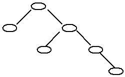
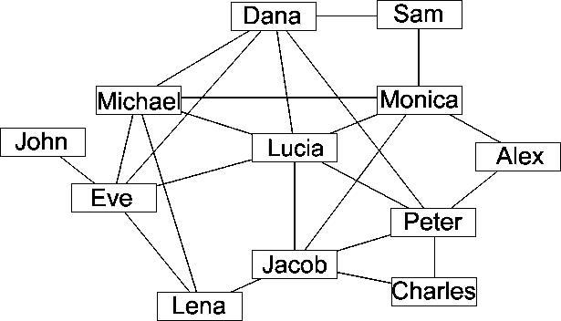
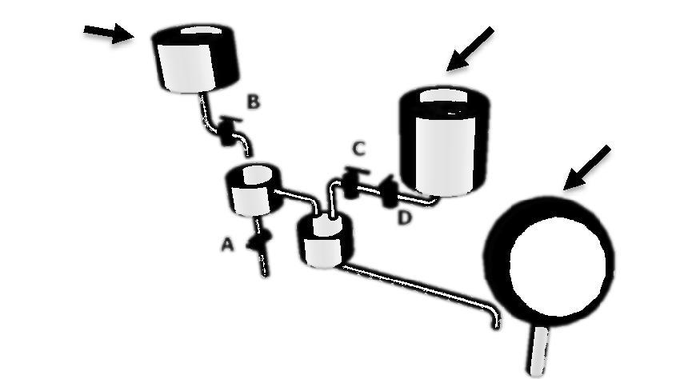

一、单选题(共15题，每题1.5分，共计22.5分；每题有且仅有一个正确选项)
| 1. | 以下不是微软公司出品的软件是（ ）。 |
|---|
| 2. | 如果开始时计算机处于小写输入状态，现在有一只小老鼠反复按照 CapsLock、字母键 A、字母键 S 和字母键 D 的顺序来回按键， 即 CapsLock、A、S、D、S、A、CapsLock、A、S、D、S、A、 CapsLock、A、S、D、S、A、……，屏幕上输出的第 81 个字符是字母（ ）。 |
|---|
| 3. | 二进制数 00101100和01010101异或的结果是（ ）。 |
|---|
| 4. | 与二进制小数 0.1相等的八进进制数是（）。 |
|---|
| 5. | 以比较作为基本运算，在 N个数中找最小数的最少运算次数为（）。 |
|---|
| 6. | 表达式 a*(b+c)-d的后缀表达形式为（）。 |
|---|
| 7. | 一棵二叉树如右图所示，若采用二叉树链表存储该二叉 树 （各个结点包括结点的数据、左孩子指针、右孩子指针）。 如果没有左孩子或者右孩子，则对应的为空指针。 那么该链表中空指针的数目为（ ）。 |  |
|---|
| 8. | G是一个非连通简单无向图，共有 28条边，则该图至少有（）个顶点。 |
|---|
| 9. | 某计算机的 CPU和内存之间的地址总线宽度是32位（bit），这台计算机最多可以使用（）的内存。 |
|---|
| 10. | 有以下程序：
#include <iostream>
using namespace std;
int main() {
int k = 4, n = 0;
while (n < k) {
n++;
if (n % 3 != 0)
continue;
k--;
}
cout << k << "," << n << endl;
return 0;
}
程序运行后的输出结果是（ ）。
|
|---|
| 11. | 有7个一模一样的苹果，放到3个一样的盘子中，一共有（）种放法。 |
|---|
| 12. | Lucia 和她的朋友以及朋友的朋友都在某社交网站上注册了账号。 下图是他们 之间的关系图，两个人之间有边相连代表这两个人是朋友，没有边相连代表不是朋友。 这个社交网站的规则是：如果某人 A 向他（她）的朋友 B 分享了 某张照片，那么 B 就可以对该照片进行评论； 如果 B 评论了该照片，那么他 （她）的所有朋友都可以看见这个评论以及被评论的照片， 但是不能对该照片进行评论（除非 A 也向他（她）分享了该照片）。 现在 Lucia 已经上传了一张照片，但是她不想让 Jacob 看见这张照片， 那么她可以向以下朋友（）分享该照片。 |  |
|---|
| 13. | 周末小明和爸爸妈妈三个人一起想动手做三道菜。 小明负责洗菜、爸爸负责切菜、妈妈负责炒菜。 假设做每道菜的顺序都是：先洗菜10分钟，然后切菜10分钟，最后炒菜10分钟。 那么做一道菜需要30分钟。注意：两道不同的菜的相同步骤不可以同时进行。 例如第一道菜和第二道的菜不能同时洗，也不能同时切。 那么做完三道菜的最短时间需要（）分钟。 |
|---|
| 14. |
假设某算法的计算时间表示为递推关系式 T(n) = 2T(n/4)+√n T(1) = 1 则算法的时间复杂度为（ ）。 |
|---|
| 15. |
给定含有 n个不同的数的数组 L=a. Search(k+1, n) b. Search(1, k-1) c. return L[k] Search(1, n) 1. k← [n/2] 2. if L[k] > L[k-1] and L[k] > L[k+1] 3. then __________ 4. else if L[k] > L[k-1] and L[k] < L[k+1] 5. then __________ 6. else __________正确的填空顺序是（ ）。 |
|---|
二、不定项选择题 (共5题，每题1.5分，共计7.5分；每题有一个或多个正确选项，多选或少选均不得分)
| 1. | 以下属于无线通信技术的有（）。 |
|---|
| 2. | 可以将单个计算机接入到计算机网络中的网络接入通讯设备有（）。 |
|---|
| 3. | 下列算法中运用分治思想的有（）。 |
|---|
| 4. | 下图表示一个果园灌溉系统，有 A、B、C、D四个阀门，每个阀门可以打开 或关上， 所有管道粗细相同，以下设置阀门的方法中，可以让果树浇上水的有（）。 |  |
|---|
| 5. | 参加 NOI比赛，以下能带入考场的有（）。 |
|---|
三、问题求解(共2题，每题5分，共计10分)
| 1. | 一个1×8的方格图形（不可旋转）用黑、白两种颜色填涂每个方格。 如果每个方格只能填涂一种颜色，且不允许两个黑格相邻，共有 种填涂方案。 |
|---|
| 2. | 某中学在安排期末考试时发现，有7个学生要参加7门课程的考试， 下表列出了哪些学生参加哪些考试（用√表示要参加相应的考试）。 最少要安排 ) 个不同的考试时间段才能避免冲突？ | ||||||||||||||||||||||||||||||||||||||||||||||||||||||||||||||||
|---|---|---|---|---|---|---|---|---|---|---|---|---|---|---|---|---|---|---|---|---|---|---|---|---|---|---|---|---|---|---|---|---|---|---|---|---|---|---|---|---|---|---|---|---|---|---|---|---|---|---|---|---|---|---|---|---|---|---|---|---|---|---|---|---|---|
|
四、阅读程序写结果(共4题，每题8分，共计32分)
| 1. |
#include <iostream>
using namespace std;
int main() {
int a[6] = {1, 2, 3, 4, 5, 6}; int pi = 0;
int pj = 5; int t , i;
while(pi |
|---|---|
| 输出： |
| 2. |
#include <iostream>
using namespace std;
int main() {
char a[100][100], b[100][100];
string c[100];
string tmp;
int n,i=0,j=0,k=0,total_len[100],length[100][3];
cin >> n;
getline(cin, tmp);
for (i = 0; i < n; i++) {
getline(cin, c[i]);
total_len[i] = c[i].size();
}
for (i = 0; i < n; i++) {
j = 0;
while (c[i][j] != ':') {
a[i][k] = c[i][j];
k = k + 1;
j++;
}
length[i][1] = k - 1;
a[i][k] = 0;
k = 0;
for(j = j + 1; j < total_len[i]; j++) {
b[i][k] = c[i][j];
k = k + 1;
}
length[i][2] = k - 1;
b[i][k] = 0;
k = 0;
}
for (i = 0; i < n; i++) {
if (length[i][1] >= length[i][2])
cout << "NO,";
else {
k = 0;
for (j = 0; j < length[i][2]; j++) {
if (a[i][k] == b[i][j])
k = k + 1;
if (k > length[i][1])
break;
}
if (j == length[i][2])
cout << "NO,";
else
cout << "YES,";
}
}
cout << endl;
return 0;
}
|
|---|---|
|
输入：3 AB:ACDEbFBkBD AR:ACDBrT SARS:Severe Atypical Respiratory Syndrome | |
| 输出： |
| 3. |
#include <iostream>
using namespace std;
int lps(string seq, int i, int j) {
int len1, len2;
if (i == j) return 1;
if (i > j) return 0;
if (seq[i] == seq[j])
return lps(seq, i + 1, j - 1) + 2;
len1 = lps(seq, i, j - 1);
len2 = lps(seq, i + 1, j);
if (len1 > len2)
return len1;
return len2;
}
int main() {
string seq = "acmerandacm";
int n = seq.size();
cout << lps(seq, 0, n - 1) << endl;
return 0;
}
|
|---|---|
| 输出： |
| 4. | #include <iostream> #include |
|---|---|
|
输入：11 1 2 1 3 2 4 2 5 2 6 3 7 7 8 7 11 6 9 9 10 | |
| 输出： |
五、完善程序(共2题，每题14分，共计28分)
| 1. | （交朋友） 根据社会学研究表明，人们都喜欢找和自己身高相近的人做朋友。 现在有 n 名身高两两不相同的同学依次走入教室，调查人员想预测每个人在 走入教室的瞬间最想和已经进入教室的哪个人做朋友。当有两名同学和这名 同学的身高差一样时，这名同学会更想和高的那个人做朋友。比如一名身高 为 1.80 米的同学进入教室时，有一名身高为 1.79 米的同学和一名身高为1.81米的同学在教室里，那么这名身高为 1.80 米的同学会更想和身高为 1.81 米的同学做朋友。对于第一个走入教室的同学我们不做预测。 由于我们知道所有人的身高和走进教室的次序，所以我们可以采用离线的做法来解决这样的问题，我们用排序加链表的方式帮助每一个人找到在他 之前进入教室的并且和他身高最相近的人。（第一空 2 分，其余 3 分） |
|---|
#include <iostream>
using namespace std;
#define MAXN 200000
#define infinity 2147483647
int answer[MAXN], height[MAXN], previous[MAXN], next[MAXN]; int rank[MAXN];
int n;
void sort(int l, int r) {
int x = height[rank[(l + r) / 2]], i = l, j = r, temp;
while (i <= j){
while (height[rank[i]] < x) i++;
while (height[rank[j]] > x) j--;
if () {
temp = rank[i]; rank[i] = rank[j]; rank[j] = temp;
i++; j--;
}
}
if (i < r) sort(i, r);
if (l < j) sort(l, j);
}
int main(){
cin >> n;
int i, higher, shorter;
for (i = 1; i <= n; i++) {
cin >> height[i];
rank[i] = i;
}
sort(1, n);
for (i = 1; i <= n; i++) {
previous[rank[i]] = rank[i - 1];
;
}
for (i = n; i >= 2; i--){
higher = shorter = infinity;
if (previous[i] !=0)
shorter = height[i] - height[previous[i]];
if (next[i] != 0)
;
if ()
answer[i] = previous[i];
else
answer[i] = next[i];
next[previous[i]] = next[i];
;
}
for (i = 2; i <= n; i++)
cout << i << ":" << answer[i];
return 0;
}
|
| 2. | （交通中断） 有一个小国家，国家内有 n 座城市和 m 条双向的道路，每条道路连接着两座不同的城市。其中 1 号城市为国家的首都。由于地震频繁可能导致某一个城市与外界交通全部中断。这个国家的首脑想知道，如果只有第i(i>1)个城市因地震而导致交通中断时，首都到多少个城市的最短路径长度会发生改变。如果因为无法通过第 i 个城市而导致从首都出发无法到达某个城 市，也认为到达该城市的最短路径长度改变。 对于每一个城市 i，假定只有第 i 个城市与外界交通中断，输出有多少个 城市会因此导致到首都的最短路径长度改变。 我们采用邻接表的方式存储图的信息，其中 head[x]表示顶点 x 的第一条 边的编号，next[i]表示第 i 条边的下一条边的编号，point[i]表示第 i 条边的终点，weight[i]表示第 i 条边的长度。（第一空 2 分，其余 3 分） |
|---|
#include <iostream> #include |